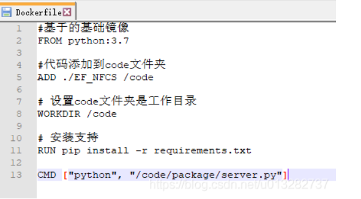

更新yum包：yum update -y
安装所需要的软件包：yum install -y yum-utils device-mapper-persistent-data lvm2
设置yum源：yum-config-manager –add-repo https://download.docker.com/linux/centos/docker-ce.repo
安装：yum install docker-ce
查看版本：docker -v
启动命令：systemctl start docker
停止docker: systemctl stop docker
查看docker服务状态：systemctl status docker
重启docker ：systemctl restart docker
开机启动docker:systemctl enable docker
查看本地有哪些镜像文件：docker images
搜索镜像：docker search xxx //xxx为镜像名称
1、基于官方提供的镜像
下载镜像：docker pull xxx //默认为最新版本，如果选择版本直接加在后面docker pull xxx:5.0
2、使用Dockerfile
Dockerfile创建自定义Docker镜像以及CMD与ENTRYPOINT指令的比较
示例
删除镜像：docker rmi xxx //xxx为image ID
删除所有镜像：docker rmi `docker images -q`
创建并启动容器：docker run -it –name=xxx centeros:7 /bin/bash
//-i表示一直运行 ; -t分配伪终端用于接受命令 ; -name=xxx 取名字为xxx ；/bin/bash打开shell脚本
docker run -id –name=lt centeros:7 /bin/bash
//d表示后台运行容器，不打开容器
退出容器：exit
查看正在运行的容器：docker ps //查看所有容器：docker ps -a
进入正在运行的容器：docker exec -it xxx /bin/bash //xxx为容器名字
停止容器：docker stop xxx //xxx为名字
删除容器：docker rm xxx //xxx为名字
删除所有容器：docker rm `docker ps -aq` //无法将正在运行的容器删除
查看容器信息：docker inspect xxx //xxx为名字
1、数据卷是宿主机中的一个文件或目录，绑定容器后对其修改会同步到容器上
2、一个数据卷可以挂载多个容器
3、一个容器可以被多个数据卷挂载
创建启动容器时使用-v参数
docker run -it –name=xxx -v /root/data:/root/data_container centeros:7 /bin/bash
// /root/data:/root/data_container表示将当前的data目录挂在到容器的/root/data_container下
将两个容器挂在到另一个容器中
1、创建并启动c3数据卷容器，使用-v参数设置数据卷
docker run -it –name=c3 -v /volume centos:7 /bin/bash
//-v /volume 没有指定宿主机的数据卷目录，docker会自动分配一个目录，可使用docker inspect c3查看 (mounts中 )
2、创建启动c1，c2容器，使用–vloumes-from参数设置数据卷
docker run -it –name=c1 –volumes-from c3 centos:7 /bin/bash
docker run -it –name=c2 –volumes-from c3 centos:7 /bin/bash
在Docker容器中部署mysql，并通过外部mysql客户端操作mysql Server
1、搜索MySQL镜像
2、拉取MySQL镜像
3、创建容器
4、操作容器中的mysql（采用端口映射方式，类似于容器卷）
这是一个左对齐显示的HTML页面示例。